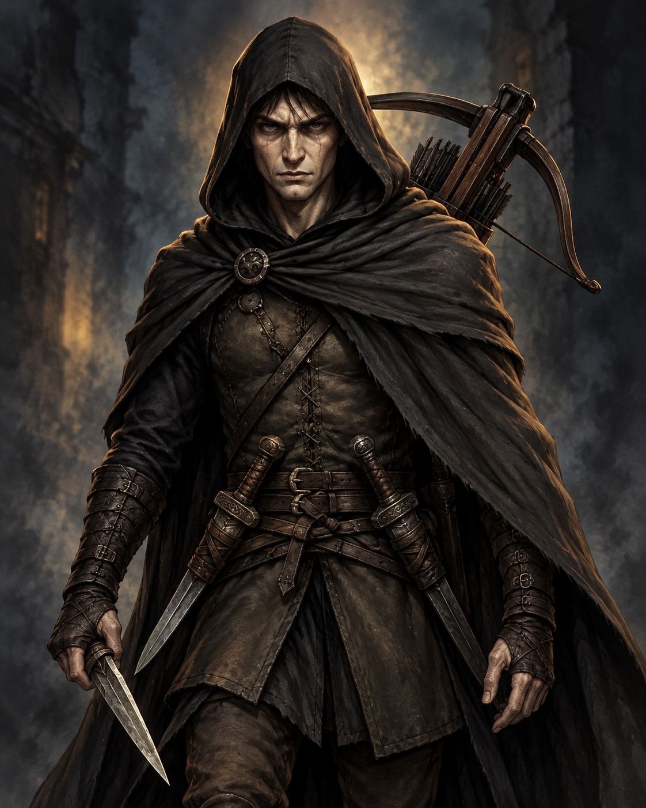

SISSOR

🗡 Backstabbing · Attacco alle spalle
Contro un bersaglio vulnerabile, Sissor ottiene +4 al tiro per colpire e infligge un dado di danno aggiuntivo se colpisce.
Funziona in mischia e con armi a distanza solo a gittata corta. Non funziona a gittata media o lunga. Il dado aggiuntivo aumenta ai livelli previsti dalla progressione di classe.
Richiede armatura leggera o inferiore.
🌑 Hiding · Nascondersi (19+)
Può iniziare a nascondersi come azione di combattimento se dispone di copertura, luce fioca o oscurità. Il Judge effettua il tiro segretamente.
Se riesce, i nemici non hanno linea di vista su Sissor. Se fallisce, Sissor non sa necessariamente di essere stato scoperto. Restando fermo e occultato, gli avversari subiscono comunque −2 ai tiri di sorpresa.
La condizione termina se si muove o attacca, oppure se perde l'occultamento. Richiede armatura leggera o inferiore.
👣 Sneaking · Muoversi silenziosamente (17+)
Può iniziare a muoversi furtivamente come azione di movimento. Nessuna penalità a velocità di esplorazione o fino a metà velocità di combattimento; −5 al tiro oltre metà velocità; −10 se corre.
Il Judge tira segretamente. Se riesce, Sissor si muove senza produrre alcun rumore. Fuori dalla linea di vista, gli avversari hanno −2 ai tiri di sorpresa anche quando il tiro fallisce.
Richiede armatura leggera o inferiore.
👁 Shadowy Senses · Sensi nell'ombra
Muovendosi a velocità di esplorazione o combattimento, percepisce l'ambiente come se disponesse di una fonte di luce fioca entro 30 piedi, anche nell'oscurità ordinaria.
Non distingue colori, volti, scritte o immagini piatte. Non funziona mentre carica o corre, se assordato, nell'oscurità magica o nel silenzio magico.
🏙 Streetwise · Conoscenza della malavita
Riconosce automaticamente gesti, segni, gergo e territori delle organizzazioni criminali della propria città. In altri centri urbani è normalmente richiesto un tiro di competenza 11+, modificabile dal Judge.
Equivale a un grado della proficiency Streetwise.
🎯 Precise Shooting · Classe
Competenza di classe del template, associata alla precisione con le armi a distanza. Il testo meccanico completo è da verificare prima di indicare modificatori numerici specifici.
⚖ Bargaining · Generale
Competenza generale del template, utilizzata nelle contrattazioni e negoziazioni. Il testo meccanico completo è da verificare prima di indicare modificatori numerici specifici.
Il template ufficiale parte con un ingombro totale di 6⅓ stone. Il peso attuale dipende dalle modifiche fatte in gioco; il conteggio automatico sarà aggiunto dopo la conferma dell'inventario reale.
La scheda salva le modifiche sul dispositivo. Puoi esportare un file JSON e importarlo su un altro browser o iPad.
Caratteristiche e combattimento: fotografie della scheda cartacea di Sissor. Classe, poteri e template: ACKS II Revised, pp. 44–46 stampate. Equipaggiamento iniziale da template, non inventario attuale verificato. Versione 0.1.0, senza video animati.